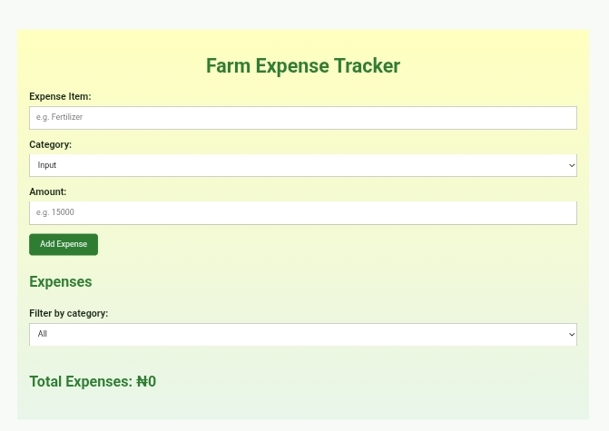

Keep Your Farm Expenses Organized
Managing a farm involves many expenses, from fertilizer and seeds to labour and transportation.
Lejora Farm Expense Tracker gives you a simple way to record and keep track of those expenses in one place.
Try the Expense TrackerHow It Works
Add an Expense
Enter the expense item, select its category, and enter the amount.
Organize Your Expenses
Group expenses into categories such as Input, Labour, and Transport.
Track Your Spending
See your total farm expenses and check the total for each category.
Manage Your Records
Delete expenses when you no longer need them. Your records remain saved in your browser when you return to the app.
Why Use Lejora?
Farm expenses are easier to manage when your records are organized.
Lejora helps you keep your expense records together so you have a clearer view of where your farm money is going.

Start Tracking Your Farm Expenses
Record your expenses. Check your spending. Keep your farm records organized.
Try the Expense TrackerHave feedback?
Lejora is being developed with practical farm record keeping in mind. Your feedback will help us improve the Farm Expense Tracker.
Share Your Feedback View Source Code